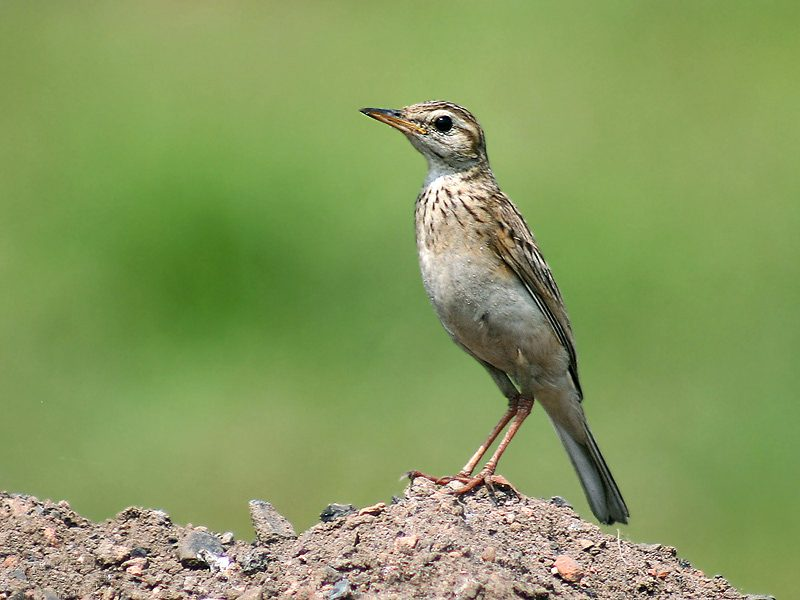

रुगेलPaddyfield Pipit
Anthus rufulus · Motacillidae · BRD-0109

- Scientific name वैज्ञानिक नाम
- Anthus rufulus Vieillot, 1818
- Family कुल
- Motacillidae
- Hindi हिंदी
- रुगेल
- Local names स्थानीय नाम
- rugel, rugail, charchari, pipit
- Status here यहाँ की स्थिति
- native
- Movement आवागमन
- Resident, here all year
- IUCN IUCN
- LC
- Review समीक्षा
- audited and independently read
When to look कब देखें
Present all year. साल भर मौजूद।
Uses and possibilities उपयोग और संभावनाएँ
Drawn from the documented uses in the profile below, where each is labelled traditional, current or a research lead. All uses →
रुगेल / Paddyfield Pipit
Anthus rufulus Vieillot, 1818 — Motacillidae
रुगेल — भारत के धान के खेतों में रहने वाली एक छोटी, तनी हुई चिड़िया है। यह लंबी पूँछ के साथ जमीन पर चलती है। इसका रंग भूरा-लाल होता है जो खेत की मिट्टी से मिल जाता है। यह छोटे कीड़े और बीजों को खाता है। वर्षा ऋतु में इसकी आवाज़ सबसे ज़्यादा सुनाई देती है। पूरे भारत में यह एक आम पक्षी है, लेकिन इसे ध्यान से देखना पड़ता है क्योंकि यह अकेला और शांत रहता है।
Quick Identification त्वरित पहचान
| Feature | Description |
|---|---|
| Size | Small, slender pipit (15–17 cm total length); longer tail than body |
| Plumage | Rufous-brown or buff-brown overall; streaked appearance on back and breast |
| Head | Buff-brown with subtle eye-stripe; pale throat |
| Back and wings | Rufous-brown with darker streaking; flight feathers dark brown with pale edges |
| Tail | Long, thin, graduated; dark brown with white or buff outer feathers (visible when spread) |
| Underparts | Buff or pale brown; breast streaked with brown |
| Eyes and face | Dark eye; pale eye-ring or supercilium |
| Bill | Thin, pointed; adapted for picking insects |
| Legs and feet | Long, slender; pale yellowish-brown; hind claw elongated (typical of pipits) |
| Behaviour | Walks and runs on ground; flicks tail; wags horizontally while on ground |
Field tip: Look for this slender pipit walking in open, grassy areas, rice paddies, and grasslands. When flushed, flies to a low perch and then returns to the ground. The long tail and pale outer tail feathers are visible in flight. Often solitary or in pairs.
Morphology आकारिकी
Biometrics (nominate subspecies rufulus, Indian populations including eastern UP):
| Measurement | Range |
|---|---|
| Total length | 150–170 mm |
| Wing (flattened chord) | 75–90 mm |
| Tail | 65–80 mm |
| Tarsus | 20–24 mm |
| Hind claw | 8–12 mm |
| Bill (culmen) | 12–15 mm |
| Weight | 15–20 g |
Plumage: Crown and ear coverts buff-brown or rufous-brown. Supercilium (eye-stripe) pale buff, sometimes indistinct. Lores and cheek buff. Back buff-brown with darker brown streaking; streaks heaviest on mantle. Rump unstreaked or finely streaked, more uniform buff-brown. Tail long and graduated; dark brown or greyish-brown; outer feathers (rectrices) buff or whitish with dark central portion. Flight feathers dark brown with buff or pale edges. Wing coverts brown with paler edges, giving a subtle pattern. Underparts buff or pale brown; throat whiter; breast buff with brown streaking, streaks fading posteriorly; belly and undertail coverts buff or white.
Bare parts: Eyes dark brown; orbital ring pale. Bill dark brown or black, slender and pointed. Legs and feet pale yellowish-brown or pink. Hind claw notably long (>8 mm), typical of ground-walking pipits.
Sexes: Similar; males may have slightly larger hind claw than females.
Juveniles: Duller than adults; streaking on underparts heavier; overall coloration more buff.
Vocalisations
Paddyfield Pipit is moderately vocal, particularly during breeding season and in flocks.
- Call: A short, thin, high-pitched "pip" or "tsip," uttered frequently while walking or in flight. Often given as a series when flushed.
- Song: Males deliver a simple, warbling song with repeated elements, often given in a brief flight display from a perch or on the ground.
- Contact call: Soft, thin notes between flock members during non-breeding season.
Behaviour & Ecology व्यवहार और पारिस्थितिकता
Ground forager: Paddyfield Pipit is exclusively terrestrial, walking and running on the ground in a characteristic upright posture with frequent tail flicks. Forages by gleaning insects from grass and soil.
Insectivore and seed-eater: Diet consists of small insects (grasshoppers, beetles, flies), spiders, and seeds in non-breeding season. Feeds during daylight hours, with reduced activity during midday heat.
Solitary and social: Usually solitary or in pairs; occasionally joins small flocks in non-breeding season, particularly after breeding or during seasonal movements.
Territorial: Males hold territories during breeding season (February-July), calling from low perches to advertise presence. Display flights involve brief hovering flights with alternating wingbeats.
Breeding and nesting: Monogamous. Nest is a grass cup built on the ground in a depression or under tussock. Clutch size 3–4 eggs; incubation 11–13 days; fledging 10–12 days.
Life Cycle / Phenology जीवन चक्र
- January–February: Pair formation; males establish territories and begin singing
- February–April: Peak breeding season; egg-laying and first broods
- April–May: Chick-rearing; females often start second clutch while males feed fledglings
- May–July: Second and occasional third broods; juveniles fledge and disperse
- July–August: Post-breeding; reduced territorial behaviour; birds more nomadic
- August–November: Flock formation; local movements; reduced calling
- November–January: Continued presence; occasional singing on warm days
Host Plants or Prey आहार
Ground forager diet:
- Small insects: grasshoppers, crickets, locusts (particularly important in breeding season)
- Beetles and weevils
- Flies, gnats, and other small flying insects (caught on ground or in brief flights)
- Spiders and spider eggs
- Small seeds in non-breeding season (grass and weeds)
Predators / Natural Enemies शत्रु
- Shikra (Accipiter badius) and other small raptors — hunt in open country
- Pallid Harrier (Circus macrourus) — hunts in grasslands
- Snakes — raid ground nests
- Crows and mynas — may take eggs or harass parents
Agricultural / Human Relevance कृषि प्रासंगिकता
Natural pest control: By hunting grasshoppers, crickets, and agricultural pest insects, Paddyfield Pipit provides ecosystem services in rice paddies and grain fields, potentially reducing pest populations without chemical intervention.
Habitat and rice cultivation: The pipit is strongly associated with rice paddies and grasslands that are typical of eastern UP agriculture. Changes in agricultural practice, such as intensification and pesticide use, may affect populations.
Protected status: Schedule IV of the Wildlife (Protection) Act, 1972 (India). The species is legally protected throughout the country.
Expected Locally स्थानीय रूप से अपेक्षित
Not a field record. Written from published accounts for eastern Uttar Pradesh. No confirmed local sighting yet — if you have seen it, that is what the atlas needs.
अभी तक स्थानीय पुष्टि नहीं। यह विवरण प्रकाशित स्रोतों से है, किसी अवलोकन से नहीं।
Paddyfield Pipit is expected year-round as a resident in Basti and Ayodhya districts, particularly in rice-growing areas, grasslands, and open cultivated fields. Watch for single birds or pairs walking on the ground in typical upright posture, with frequent tail flicks. Listen for the thin "pip" call, particularly when birds are flushed. During breeding season (February-July), listen for males singing from low perches.
Distribution वितरण
Global range: Widespread across the Indian subcontinent from the Himalayan foothills to peninsular India; also occurs in Pakistan and other South Asian regions.
In India: Common resident throughout the mainland in open habitats, from sea level to 2,500 metres.
In Uttar Pradesh: Resident throughout the state in suitable habitat (grasslands, paddies, open cultivated areas).
In Basti district / eastern UP: Expected as a resident, particularly in rice-growing areas and grasslands.
Research Questions शोध प्रश्न
- What is the seasonal variation in pipit abundance in your area? / किस मौसम में सबसे ज़्यादा दिखता है? — Count pipits weekly in standardised plots or walks (simple observation, no equipment needed).
- What insects are most commonly hunted during breeding season? / क्या खाता है? — Collect and examine nest contents or chicks' faecal matter.
- How do pesticide use and agricultural intensification affect pipit populations? — Monitor pipit numbers in fields with different pesticide regimes.
- Where are nesting sites located, and what vegetation characteristics do they prefer? / घोंसला कहाँ बनाता है? — Find and monitor ground nests during breeding season.
- Do local populations migrate or remain year-round? — Mark individual birds or follow flocks to determine movement patterns.
Similar Species मिलती-जुलती प्रजातियाँ
| Species | How to tell apart | हिंदी |
|---|---|---|
| Tawny Pipit (Anthus campestris) — if vagrant | Paler, less rufous; finer streaking; longer legs; prefers drier areas | हल्का पिपिलिका — सूखे इलाकों में |
| Tree Pipit (Anthus trivialis) — if vagrant | Less rufous; different facial pattern; prefers trees and forest edges | पेड़ की पिपिलिका — जंगल में |
| Richard's Pipit (Anthus richardi) — if vagrant | Larger; heavier streaking; different call; rare in India | बड़ी पिपिलिका — दुर्लभ |
Field rule: Small, slender pipit + rufous-brown plumage + ground-walking behaviour + frequent tail flicks + thin "pip" call + rice paddies and grasslands = Paddyfield Pipit. The long hind claw and habitat preference are key identification features.
Taxonomy & Classification वर्गीकरण
Original description. This species was first described as Anthus rufulus by Louis Jean Pierre Vieillot in 1818, based on an Indian specimen, type locality not precisely specified.
Subspecies. Two subspecies recognised: A. r. rufulus (nominate, Indian subcontinent including eastern UP) and A. r. richardi (sometimes considered a separate species). The Indian subspecies is smaller and darker than the northern Asian form.
Family and order placement. Order Passeriformes; family Motacillidae (pipits and wag-tails). Motacillidae includes about 65 species of small ground-walking insectivores worldwide.
Phylogenetic notes. Molecular studies place Anthus rufulus within a clade of Asian pipits, distinct from African and European species.
IUCN status rationale. Assessed as Least Concern (LC). The species is widespread, maintains stable populations, and shows high tolerance for human-modified and agricultural habitats.
Photo Gallery फोटो गैलरी
No photos yet — add field photos to media/species/paddyfield_pipit/ and run node scripts/sync_photos.js.
Photos needed आवश्यक फोटो
- [ ] Bird on ground showing upright posture (जमीन पर खड़ा)
- [ ] In flight showing tail pattern and wing colouration (उड़ते समय)
- [ ] Close-up showing head pattern and eye-stripe (सिर का विवरण)
- [ ] In rice paddy (धान के खेत में)
- [ ] Showing long hind claw and leg (टाँग और पंजा)
References संदर्भ
- Vieillot, L.J.P. (1818). Nouveau Dictionnaire d'Histoire Naturelle, appliquée aux arts. Vol. 25. Deterville, Paris.
- Ali, S. & Ripley, S.D. (1987). Handbook of the Birds of India and Pakistan. Vol. 5. Oxford University Press, New Delhi.
- Grimmett, R., Inskipp, C. & Inskipp, T. (2011). Birds of the Indian Subcontinent. 2nd ed. Christopher Helm, London.
- Rasmussen, P.C. & Anderton, J.C. (2005). Birds of South Asia: The Ripley Guide. Smithsonian Institution, Washington DC.
- Alström, P. & Mild, K. (2003). Pipits, Larks and Longclaws. Christopher Helm, London.
- BirdLife International (2024). Anthus rufulus. IUCN Red List of Threatened Species. Ver. 2024.
- GBIF Occurrence Data — Anthus rufulus, Uttar Pradesh (2010–2025).
Source file: species/fauna/birds/paddyfield_pipit.md